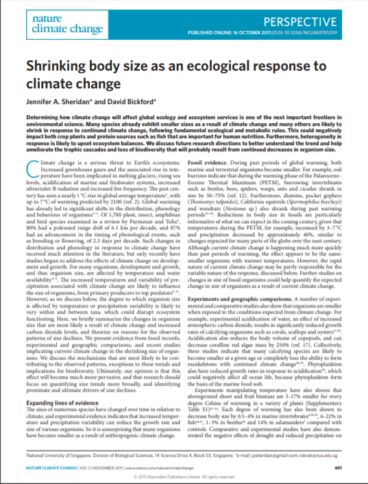
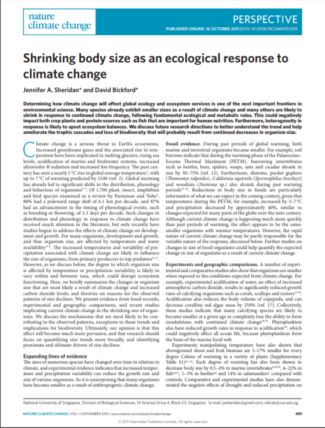

Tracking size through time
An investigation into the effects
of climate change
 

Global temperatures over the past century have risen by an average of 0.85 °C. This warming has already contributed to major alterations of both terrestrial and marine ecosystems, and a predicted warming of 2 °C over the next century will exacerbate these changes. Among plants and animals, documented effects of climate change have included shifts in species’ ranges (largely poleward and upward), advances in phenology (e.g. earlier spring emergence, changes in migratory arrival and departure dates, reduced hibernation duration), population dynamic consequences (e.g. reduced fitness due to phenotypic mismatches with preferred prey, increased fitness as a result of longer growing seasons), and changes in behavior, morphology and physiology. Of these responses, poleward (upward) range shifts and advances in spring phenology have been so well documented that they are now thought to represent a “universal fingerprint” of the impacts of climate change on plants and animals. More recently, correlations between declining body size of animals and rising global and regional temperatures have become increasingly apparent leading some researchers to suggest this phenomenon represents a “third universal response” to climate warming. The generality of the body size response to increasing temperatures and the mechanisms behind recent widespread declines in body size, however, remain unclear.
America’s Smallest Falcon is Getting Smaller
By Lauren Chambliss
The American kestrel is one such species that has been documented as having a decline in size over the last 50 years. As highlighted in the recent media article above published by the Cornell Lab of Ornithology, Teresa Ely and colleagues used historical data from long-term raptor banding sites to track the size of kestrels through time. They found declines in both the average mass and the wing length(a commonly used proxy for body size) of Amercian kestrels over a 30 to 50 year period for some populations. Our research will expand upon this important finding although it is unique in several ways from the above mentioned study. First we will draw from the extensive museum collections records for American kestrels in natural history museums around the country. Doing so allows to link the size data we collect to a specific location and thereby analyze how certain enviromental factors may influence size over a variety of spatial scales. Using the museum collectoins record also allow us to extend the temporal window of anyalysis back another 100 years!
Scientific collections based research provides many advantages for studying the historical ecology of species. However, there are many limitations and assumptions that one must deal with when using historical specimens. Even the most basic of questions, "What is body size?" can be tricky. The most commonly and intuitively used metric for size is mass, but mass can vary dramatically over the course of a year and is not always recorded in the first place. In the absence of mass data, many researchers turn to using proxies for body size; linear measurements such as wing cord (the length of the folded wing from the wrist to the tip of the longest feather), or tarsometatarsal length (the length of the exposed portion of the leg). While these measures may be highly correlated with body size, they are also subject to their own selective pressures that might influence the length or shape of the trait. Flight feathers, for instance, can wear and fray over the course of a year before they are molted and replaced. All of these factors complicate aswering the seemingly simple question of how size is changing through time.
To levarage the vast collection of museum study skins we need to figure out how to get the best measure of size from them. To address this question we will compare paired samples of skeletal elements (likely a more robust proxy for structural size) with the traditional "field" measurements that are often taken for bird specimens. To do this we are using 3D imaging technology to scan the sternal element of individuals (seen in the image to the right). We then use software to compute a unitless size measure that can be compared with the traditional linear measurements, such as wing cord, tarsus length and others, of the paired study skin. Determining which linear trait, or combination of linear traits most accurately represents structural size will provide a guideline and more robust support for which for using museum study skins to analyze how size changes through time.